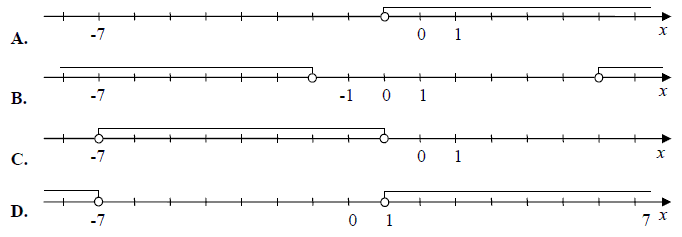
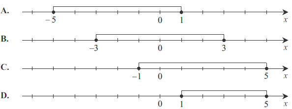
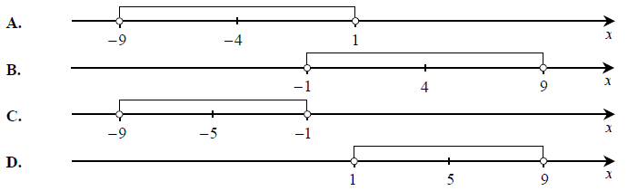
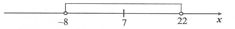
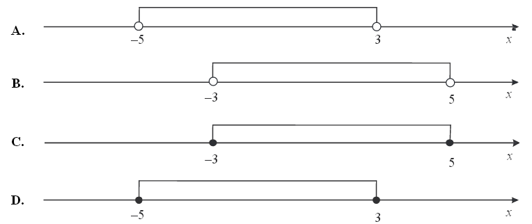

Jesteś tutaj: Matura
rozszerzona - kurs - część 1 - zadania
Matura rozszerzona - kurs - część 1 - zadania
Cały kurs na: ./matematyka-matura-rozszerzona-kurs.html.
Zbiór rozwiązań nierówności \(|x+3|>4\) jest przedstawiony na rysunku 
D
Który z zaznaczonych przedziałów jest zbiorem rozwiązań nierówności \(|2 - x| \le 3\). 
C
Wskaż rysunek, na którym zaznaczony jest zbiór wszystkich liczb rzeczywistych
spełniających nierówność \(|x + 4| \lt 5\) 
A
Przedział \(\langle -1,3 \rangle\) jest opisany nierównością
A.\( |x+1|\ge 2 \)
B.\( |x+1|\le 2 \)
C.\( |x-1|\le 2 \)
D.\( |x-1|\ge 2 \)
C
Wskaż nierówność, która opisuje przedział zaznaczony na osi liczbowej. 
A.\(|x-7|\lt 15 \)
B.\(|x-7|>15 \)
C.\(|x-15|\lt 7 \)
D.\(|x-15|>7 \)
A
Wskaż rysunek na którym przedstawiono przedział, będący zbiorem wszystkich
rozwiązań nierówności \(-4\le x-1\le 4\). 
C (na filmiku D)
Na rysunku przedstawiony jest zbiór wszystkich liczb rzeczywistych spełniających
nierówność \(|2x-8|\le 10\).  Wynika
stąd, że
Wynika
stąd, że
Wynika
stąd, że A.\( k=2 \)
B.\( k=4 \)
C.\( k=5 \)
D.\( k=9 \)
D
Rozwiązaniami nierówności \(|x^2-4|\lt |x-2|\) są wszystkie liczby ze zbioru
A.\( (-2,2) \)
B.\( (-3,-1) \)
C.\( (-\infty ,-2)\cup (2,+\infty ) \)
D.\( (-\infty ,-3)\cup (-1,+\infty ) \)
B